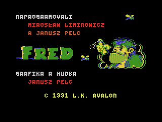

L.K. AVALON · ATARI XL/XE
← VŠECHNY HRY
ATARI800 · WEBOVÁ HERNA
1991 · AKČNÍ PLOŠINOVKA
Fred
.
Doba kamenná. Tvrdý život.
DOBRODRUŽSTVÍ ZAČÍNÁ
ATARI XL/XE · HTML5

PAUZA
▶ Pokračovat
Hrát znovu →
Začít hru →
Deset úrovní pravěkého dobrodružství.
↺ Znovu · R
Ⅱ Pauza · P
♫ Hudba · M
Zvuk zapnutý
⛶ Celá obrazovka · F